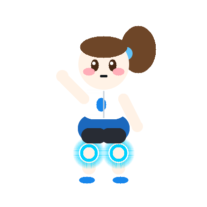
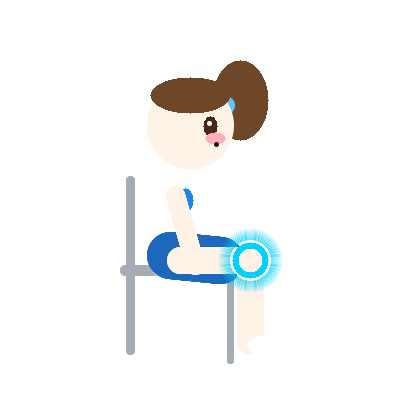
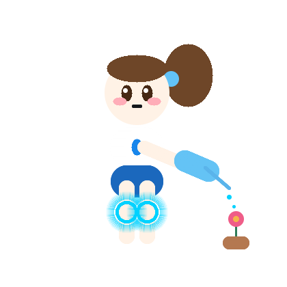

1단계
10회 × 3세트 (총 30회)
추천 대상: 처음 시작하거나, 무릎이 뻐근하고 몸이 무거운 날
- 높이 들려고 애쓰지 말고 통증 없는 낮은 각도까지만 작게 움직여요.
- 힘들면 1세트만 하고 멈춰도 몸을 아낀 훌륭한 선택이에요.

오늘은 한 번만 해도 충분해요. 기분 좋게 움직여봐요!
"천천히 걷는 걸음도 앞으로 나아가는 소중한 한 걸음이에요. 오늘 하루도 무릎 아끼며 기분 좋게 시작해봐요!"
처음 시작하거나 무릎이 뻐근한 날 추천해요.
주의 높이 들려 애쓰지 말고, 아프지 않은 범위까지만 천천히 움직여요.
세트가 시작될 때와 세트 사이 휴식 시간이 끝날 때 맑은 소리와 진동으로 알려드려요.
운동할 때 부드럽고 경쾌한 음악으로 일정한 박자를 맞춰드려요. 운동 화면에서 언제든 🎵 음악 버튼으로 켜고 끌 수 있어요.
앉아서 하기

허리는 편하게, 반동 없이요.

물주기 완료
정원에 물을 줬어요.
1단계 10회 × 3세트 · 2단계 12회 × 4세트 · 3단계 15회 × 5세트
양쪽 운동은 오른쪽과 왼쪽을 같은 횟수로 해요. 무릎이나 허리가 아프면 바로 멈춰요.
엄마의 컨디션에 맞게 선택하세요. 억지로 올리지 않아도 괜찮아요.
추천 대상: 처음 시작하거나, 무릎이 뻐근하고 몸이 무거운 날
추천 대상: 1단계가 수월해지고 다음 날 쑤시거나 피로가 없는 날
추천 대상: 동작이 익숙하고 통증 없이 근력을 더 기르고 싶은 날
통증이 생기면 언제든 즉시 멈추세요. 많이 하는 것보다 무릎을 아끼며 천천히 하는 것이 가장 효과적입니다.
주의 허리가 뒤로 젖혀지면 등받이에 기대고 움직임을 줄여요.
참고 영상 보기주의 영상의 10초 유지는 처음부터 따라 하지 않고 3초부터 시작해요.
참고 영상 보기주의 무릎을 비틀지 않아요. 소리와 함께 통증이 있으면 이 운동은 건너뛰어요.
참고 영상 보기주의 허리가 뜨거나 무릎이 안쪽으로 쓰러지면 움직임을 줄여요. 처음에는 밴드 없이 해요.
참고 영상 보기주의 허리가 꺾이거나 골반이 들리면 범위를 줄여요. 밴드는 익숙해진 뒤에만 사용해요.
참고 영상 보기주의 허리가 뒤로 굴러가면 등을 벽이나 쿠션에 가볍게 기대요.
참고 영상 보기주의 깊게 앉거나 무릎을 꺾지 않아요. 움직이는 의자는 잡지 않아요.
참고 영상 보기주의 실제로 일어서지 않아도 됩니다. 어지럽거나 무릎이 아프면 바로 힘을 풀어요.
참고 영상 보기깊게 무릎 접어 저항하기, 무릎 플랭크, 눈 감고 외발 서기, 불안정한 도구 위 서기, 깊은 사이드 런지는 전문가 확인 없이 따라 하지 않아요.
처음 운동을 시작하시거나, 무릎이 뻐근하고 몸이 무거운 날
1단계 3세트가 편안해지고, 다음 날 쑤시거나 피로가 없는 날
동작이 익숙하고, 통증 없이 다리 근력을 조금 더 기르고 싶은 날